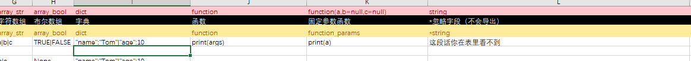

excel表规范
Sheet子表
excel文档可以视为一个目录，而它的sheet则是具体的每一个数据文件。
ee导出excel文档的时候会在output目录创建一个同名目录，然后将每个sheet导出成目标数据文件按sheet名保存。
例子：
示例.xlsx，有名为demo的sheet，导出后如下。


ee创建了示例目录，然后将名为demo的sheet导出成demo.gd。
sheet导出的dict格式
加入我们的sheet如下：
| id | name | age | sex |
| ---- | ---- | --- | --- |
| 1000 | 张三 | 18 | 男 |
导出后，ee会生成一个名为demo.gd的文件，内容如下：
{
"1000": {
"id":1000,
"name": "张三",
"age": 18,
"sex": "男"}
}
Warning
所有的sheet的A列（第一列）都会作为id列，作为导出的dict的key。
字段类型介绍
ee 支持字段类型有以下

id
id类型，int类型的别名。是用来做唯一标识的，例如：
| id |
| 编号 |
| ---- |
| 1 |
会被导出成:
{
'1':{'id':1}
}
Note
你并不是非得用id类型来作为编号列，你也可以用str类型。
只要那个类型可以作为字典的key(可hash类型)就可以。不过ee推荐用id类型作为编号列，因为这是业内常用的做法。
但是如果你的表是一张枚举、常量表，那么用str类型作为编号列是合理的。
| string | int |
|---|---|
| key | value |
| MAX_HP | 1000 |
| MAX_MP | 1000 |
{
'MAX_HP':{'key':'MAX_HP', value':1000},
'MAX_MP':{'key':'MAX_MP','value':1000}
}
int
整数类型字段，例如： | id | int | | --- | --- | | id | age | | 1 | 20 |
会被导出成:
{
'1':{'id':1,'age':20}
}
Note
int类型的特点是会将任何填入的数字转换成整数（取整）
float
浮点数类型字段，例如：
| id | float |
|---|---|
| id | timeout |
| 1 | 20.0 |
会被导出成:
{
'1':{'id':1,'timeout':20.0}
}
string
字符串类型，例如：
|id| string | |_| ------ | |id|| name | |10| 张三 |
会被导出成:
{
id:10,
name:"张三"
}
bool
布尔类型字段，例如：
| id | bool |
|---|---|
| id | is_ok |
| 1 | TRUE |
会被导出成:
{
'1':{'id':1,'is_ok':true}
}
Note
bool类型字段能够识别excel中的TRUE FALSE 转换成布尔类型。
array
数组类型字段，用|分隔，例如：
| id | array |
|---|---|
| id | list |
| 1 | 20|'2'|3 |
| 会被导出成: |
{
'1':{'id':1,'list':[20,'2',3]}
}
Warning
array类型数组是原始数组，支持任何数据类型但是你必须显式的按gds语法写字面量。 比如： 字符串你必须加双引号 '2' 。 因为array的导出是粗暴的将字符串 split("|")，然后就直接生成到代码，并没有做任何的转换，他也无法做任何的转换，因为他不知道每个元素具体应该是什么类型。
array_str
数组字符串，用|分隔，例如：
| id | array_str |
|---|---|
| id | array_str |
| 1 | a | b | c |
会被导出成:
{
'1':{'id':1,'array_str':['a','b','c']
}
!!! note:
array_str是为了方便配置字符串数组而特别定义的，他跟array的区别是，array_str配置的字符串可以省略' "。当然你也可以手动加上引号 `a`|`b`|`c`。ee 会自动识别转换。同时这个字段即便配置了数字元素也会被转换成字符串。
array_bool
数组布尔类型，用|分隔，例如：
| id | array_bool |
| --- | ------------- |
| id | array_bool |
| 1 | TRUE|FALSE| |
会被导出成:
{
'1':{'id':1,'array_bool':[true,false]}
}
Note
array_bool是为了方便配置布尔值数组特别定义的，他会将TRUE和FALSE转换成布尔值。
dict
字典类型，用|分隔，例如：
| id | dict |
| --- | ---------------------- |
| id | dict |
| 1 | "name":"Tom"|"age":10 |
会被导出成:
{
'1':{'id':1,'dict':{'name':'Tom','age':10}}
}
Warning
字典类型必须使用python字面量语法定义。因为ee是直接将字典定转写到数据文件，并没有做任何的转换，所以必须使用python语法。
function
函数类型，例如：
| id | function |
|---|---|
| id | function |
| 1 | print(args) |
会被导出成:
{
'1':{'id':1,'function':Callable(self,'function_1')}
}
static def function_1(args=[]):
print(args)
Note
function类型的参数是args=[]，是个泛用参数列表。这个函数要如何传参，还有位置参数到底如何使用和处理，完全看程序员自己私下的约定。
可用显式参数列表版本的function类型，来解决这个参数列表的问题。
显式参数函数类型，例如：
| id | function(a,b=null,c=null) |
|---|---|
| id | function |
| 1 | print(args) |
会被导出成:
{
'1':{'id':1,'function':Callable(self,'function_1')}
}
static def function_1(a,b=null,c=null):
print(a)
print(b)
print(c)
Note
显式参数函数类型，参数列表是显式定义的，Godot编辑器语法检查的时候可以会约束参数列表。相对于泛用参数列表，显式参数可以更容易约束和看出函数参数。